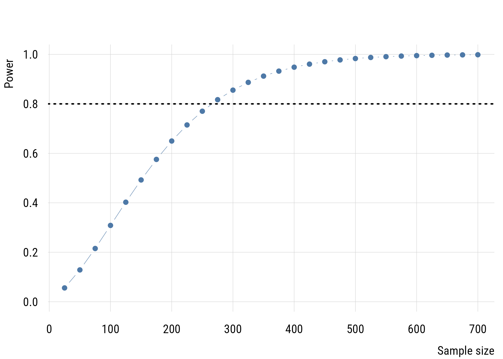
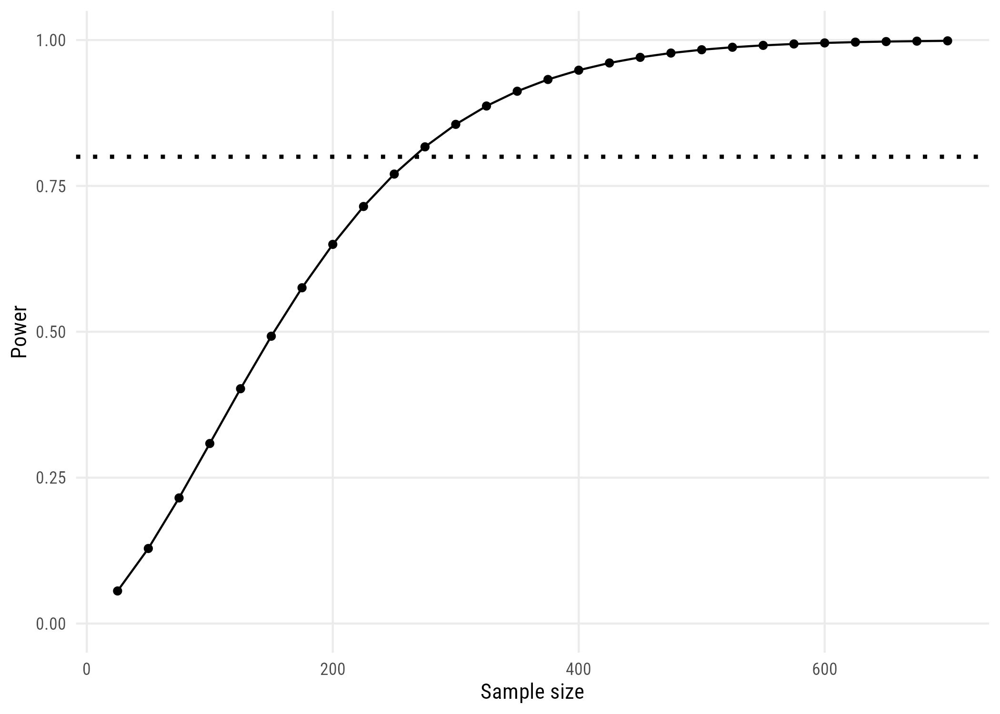

We are going to look at studying how US adults might have changed the number of TV hours they watch. That first chunk was just getting some GSS data and calculating each respondent’s difference in reported hours from 2010 to 2014.
Since we’re talking about a change, there’s a natural null hypothesis here, which is “no change.” In other words, that \(E(Y_{i3} - Y_{i1}) = 0\).
There are easier ways to do this but let’s keep going with the logic of model comparison. We’ll estimate a model where the mean difference is assumed to be zero (MC) and a model where we estimate the mean difference from data (MA).
mod_c <-lm(ydiff ~0, data = panel)mod_a <-lm(ydiff ~1, data = panel)(deviance(mod_c) -deviance(mod_a)) /deviance(mod_c)
[1] 0.0003702235
This is a teeeeeeeny tiny PRE. By checking mean(panel$ydiff) we can see that the mean difference is -0.04556. So the low PRE value isn’t a big surprise here.
But maybe the world has changed since 2014 and I want to check if people changed between 2026 and 2030? How many respondents would I need to recruit for a study that could answer that question?
7.1.2 Calculating power
Figuring out how many respondents you need to detect an effect is a question of power. Power is simply the probability of rejecting the null hypothesis of no difference given that there is actually a difference of a pre-specified size. This pre-specified size is usually the minimum difference that a scientist would regard as substantively interesting.
There are functions in R to calculate power for different sorts of statistical tests. We’ll use the power.t.test() function here. We haven’t talked about it yet but the t-test is a standard method for this sort of test. We will talk more about the t distribution (and test) a bit later. For now just go with it!
Here’s the power calculation assuming the minimum interesting change would be 30 minutes (.5 hours) and that the SD of the difference is the same observed in the GSS.
One-sample t test power calculation
n = 265.3863
delta = 0.5
sd = 2.368483
sig.level = 0.01
power = 0.8
alternative = two.sided
So we’d need a sample of at least 266 people to have at least an 80% chance of rejecting the null hypothesis of no difference if in reality people will (on average) increase or decrease their TV watching by at least 30 minutes over the next 4 years. (This assumes we’ll use an alpha level of .01.)
We can look at this in a slightly different way by seeing what power we’d have for different sample sizes.
sizes <-seq(25, 700, by =25)curve_df <-data.frame(n = sizes,power =map_dbl(sizes, \(k)power.t.test(n = k, delta =0.5, sd = sd_change,sig.level =0.01, type ="one.sample")$power))
plt(power ~ n, data = curve_df, type ="b",xlab ="Sample size", ylab ="Power", ylim =c(0, 1))abline(h =0.8, lty =3, lwd =2)

Figure 7.1: Power to detect a half-hour change, by sample size.
ggplot(curve_df, aes(x = n, y = power)) +geom_line() +geom_point() +geom_hline(yintercept =0.8, linetype ="dotted", linewidth =1) +ylim(0, 1) +labs(x ="Sample size", y ="Power")

Figure 7.2: Power to detect a half-hour change, by sample size.
Given a minimum effect size, expected SD, and alpha level, power increases as a function of the sample size. With around 150 people, we could only detect a true 30-minute difference about half the time. And we definitely wouldn’t need more than 600 people, as the power is nearly 100% at that sample size.
7.1.3 Simulation power analysis
These calculators are great but we can learn more about power analysis by simulation. I want to write a function that does my whole study from start to finish (i.e., collects data, tests null hypothesis, reports result) with a particular sample size. Again, the goal is to see how often I reject the null hypothesis given that it’s actually false (in a particular way). I will create my own hypothetical world with a known change (30 minutes) and SD (2.37; estimated from the GSS) and then conduct my experiment many, many times under different sample sizes and alpha levels to see how often I can (correctly) reject the null hypothesis.
What this do_study() function returns is a 1 if the null hypothesis is rejected and a 0 if it can’t be rejected.
# create "do study function!do_study <-function(delta, sd, alpha, n) {# create fake data with minimal interesting change d <-tibble(diff =rnorm(n, delta, sd) )# estimate Model C and Model A mc <-lm(diff ~0, data = d) ma <-lm(diff ~1, data = d)# estimate observed PRE sse_c <-deviance(mc) sse_a <-deviance(ma) pre <- (sse_c - sse_a) / sse_c df1 <-length(coef(ma)) -length(coef(mc)) df2 <- n -length(coef(ma))# calculate critical value of PRE crit_f <-qf(p =1- alpha,df1 = df1,df2 = df2) crit_pre <- crit_f / (crit_f + df2/df1)# STUDY RESULT: return a 1 if reject, a 0 if fail to rejectreturn(as.numeric(pre > crit_pre)) # this is a logical to 0/1}
Now we can test it out under different conditions and see what the rejection rate looks like.
# create skeleton with variable valuesset.seed(0206) # for reproducibilitysim_studies <-expand_grid(sid =1:500, # 500 times per combodelta = .5, # minimum interesting changesd =2.37, # this is from observed GSS differencen =seq(50, 600, 50), # from 50 to 600 by 50salpha =c(.05, .005) # different alpha levels ) |>rowwise() |>mutate(reject =do_study( # "do the studies"delta = delta,sd = sd,n = n,alpha = alpha ))# summarize results by conditionsim_results <- sim_studies |>group_by(n, alpha) |>summarize(prob_reject =mean(reject), # rejection proportions.groups ="drop") # don't need anymore
This is “messier” than a power calculator but you can see the same basic findings you’d expect. And it (hopefully) gives you a better sense of power as “the probability of rejecting the null hypothesis under a given set of conditions.”1
1 What would you expect these graphs to look like if the null hypothesis of no change was actually true? Try it out!
7.2 Effect sizes
We picked a 30-minute change as the minimum interesting effect size. But “how big” is this difference? As TV watchers, we have an intuitive sense. But a more general way of quantifying effect size is Cohen’s d. This is just the difference divided by the SD. So for the change in TV time it would be .5 hours / 2.37 hours = .21.
For a one-parameter comparison like we have here, Cohen’s d is related to PRE (or \(\eta^2\) or \(R^2\)) as follows:
So the minimum PRE we were looking for in our power analysis is about .011.
Although it’s common (people love guidelines!) you should NOT mechanically use Cohen’s d type values to interpret effect sizes in terms of small, medium, or large. But it’s useful to visualize what some differences look like.
d_values <-c(0.2, 0.5, 0.8)z <-seq(-4, 4, length.out =300)shift_plot <-map(d_values, \(dv)bind_rows(data.frame(z = z, density =dnorm(z, mean =-dv /2), group ="Group 1", d = dv),data.frame(z = z, density =dnorm(z, mean = dv /2), group ="Group 2", d = dv) )) |>list_rbind()shift_plot$panel <-factor(paste0("d = ", shift_plot$d, " (PRE = ",round(shift_plot$d^2/ (shift_plot$d^2+4), 3), ")"))
Figure 7.6: Two groups separated by small, medium, and large effect sizes.
A “small” effect is two distributions you’d struggle to tell apart. A “large” one still overlaps across most of its range.
WarningThe shortcut needs equal groups
That \(d^2/(d^2+4)\) conversion is exactly right for the one-parameter comparison above, and for two groups of the same size. For two groups of different sizes it can be badly wrong.
So our 95% confidence interval is [-.200, .109]. Our estimate is that the average number of tvhours changed somewhere between decreasing by .2 hours and increasing by .11 hours.
confint() does the same thing from the fitted model:
confint(mod_a)
2.5 % 97.5 %
(Intercept) -0.2005022 0.1093911
7.3.3 Interpreting a confidence interval
This is trickier than it seems. You want to be able to say something like “we’re 95% sure that the true value is in this interval.” But that’s not quite right. The 95% confidence is about the procedure, not about the estimate you get from real data. The technically correct definition is:
If you were to repeat the entire data-generating-and-interval-building process indefinitely under identical conditions (same model, same population mean), then 95% of the intervals produced by this method would contain the true mean and 5% would not.
7.3.4 Intervals for model parameters
The same recipe works for any estimate with a standard error, including the parameters of a fitted model, which is where we’ll spend the rest of the book.
College graduates score about 1.63 words higher, and we can be reasonably confident the difference lies between about 1.45 and 1.82 words.
7.3.5 t and F
For a one-parameter comparison, the F-statistic is just the square of the t-statistic. To illustrate, let’s revisit our null hypothesis that people did NOT change their TV viewing hours between 2010 and 2014.
anova(mod_c, mod_a)
Analysis of Variance Table
Model 1: ydiff ~ 0
Model 2: ydiff ~ 1
Res.Df RSS Df Sum of Sq F Pr(>F)
1 900 5045.0
2 899 5043.1 1 1.8678 0.333 0.5641
The squared t distribution is also the same as the F distribution.
7.4 The bootstrap
One last tool. Everything above depended on knowing the shape of the sampling distribution. Sometimes you’d rather not lean on that at all.
The bootstrap resamples the data you have, with replacement, and recomputes the statistic each time. The spread of those values estimates the sampling distribution directly.
2.5% 97.5%
bootstrap -0.2000000 0.1033333
formula -0.2005022 0.1093911
Nearly identical, as expected.
TipTwo ways to build a sampling distribution
In Chapter 6 we generated data from a hypothetical world where the null was true. Here we resample the data we actually collected, making no claim about any hypothetical world.
The first requires you to specify a model of the world. The second only requires that your sample resembles the population it came from.
7.5 Recap
power is the probability of rejecting the null given that there really is a difference of a pre-specified size
power depends on effect size, variability, sample size, and alpha
compute it before collecting data
a power calculator and a simulation give the same answer, and writing do_study() forces you to say exactly what world you’re assuming
Cohen’s d is the difference divided by the SD, and relates to PRE by \(\eta^2 = d^2/(d^2+4)\) for a one-parameter comparison
don’t convert d into adjectives mechanically
CIs use the normal for large samples and the t distribution for smaller ones
the t looks more and more like the normal as df goes up
a confidence interval needs the estimate, its standard error, and the width of the relevant distribution
for a one-parameter comparison, F is the square of t